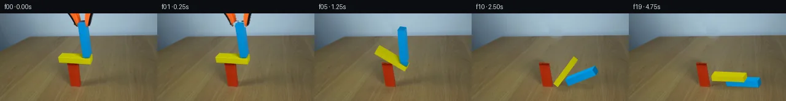

![首帧]()

Round 00
2026-11-05T19:26:38.595427+00:00像素候选变化代码 +337/−0inspection 更新
pixels 286a7f029cd03c1e · code ad194311c993da5a
查看本轮 generate.py 真实 diff
--- previous/generate.py
+++ current/generate.py
@@ -0,0 +1,337 @@
+"""PixelWorld continuation using only input pixels and local numerical operations.
+No model, external image, rendering engine, physics engine, or network is used.
+"""
+from pathlib import Path
+from PIL import Image, ImageDraw
+import cv2
+from scipy.ndimage import gaussian_filter
+from artifact_io import save
+ROOT=Path(__file__).resolve().parent
+import numpy as np, math, json
+class Body:
+ def __init__(self,name,w,h,pos,mass=0,angle=0):
+ self.name=name;self.w=w;self.h=h;self.p=np.array(pos,dtype=float);self.a=angle;self.v=np.zeros(2);self.o=0.;self.im=1/mass if mass else 0;self.ii=12/(mass*(w*w+h*h)) if mass else 0
+ def axes(self):
+ c,s=math.cos(self.a),math.sin(self.a);return np.array([c,s]),np.array([-s,c])
+ def verts(self):
+ a,b=self.axes();return np.array([self.p-a*self.w/2-b*self.h/2,self.p+a*self.w/2-b*self.h/2,self.p+a*self.w/2+b*self.h/2,self.p-a*self.w/2+b*self.h/2])
+def cross(a,b):return a[0]*b[1]-a[1]*b[0]
+def spin(w,r):return np.array([-w*r[1],w*r[0]])
+def manifold(A,B):
+ va,vb=A.verts(),B.verts();best=1e9;axis=None;owner=None
+ for body,verts in [(A,va),(B,vb)]:
+ for n in body.axes():
+ aa=va@n;bb=vb@n;d=min(aa.max(),bb.max())-max(aa.min(),bb.min())
+ if d < -0.005:return []
+ if d<best:best=d;axis=n.copy();owner=body
+ if np.dot(B.p-A.p,axis)<0:axis=-axis
+ if owner is A:R,I,n=va,vb,axis
+ else:R,I,n=vb,va,-axis
+ # CCW polygon: edge outward normal (dy,-dx).
+ nr=[]
+ for k in range(4):
+ e=R[(k+1)%4]-R[k];en=np.array([e[1],-e[0]]);en/=np.linalg.norm(en);nr.append(np.dot(en,n))
+ k=int(np.argmax(nr));r0,r1=R[k],R[(k+1)%4];t=(r1-r0)/np.linalg.norm(r1-r0)
+ ni=[]
+ for j in range(4):
+ e=I[(j+1)%4]-I[j];en=np.array([e[1],-e[0]]);en/=np.linalg.norm(en);ni.append(np.dot(en,n))
+ j=int(np.argmin(ni));p0,p1=I[j].copy(),I[(j+1)%4].copy()
+ lo,hi=np.dot(r0,t),np.dot(r1,t)
+ def clip(points,normal,lim):
+ if len(points)<2:return points
+ q0,q1=points;d0=np.dot(q0,normal)-lim;d1=np.dot(q1,normal)-lim;out=[]
+ if d0<=0:out.append(q0)
+ if d1<=0:out.append(q1)
+ if d0*d1<0:out.append(q0+(q1-q0)*d0/(d0-d1))
+ return out[:2]
+ pts=clip([p0,p1],-t,-lo);pts=clip(pts,t,hi)
+ out=[];ref=np.dot(r0,n)
+ for p in pts:
+ d=np.dot(p,n)-ref
+ if d<=0.005:out.append((A,B,p-n*d*.5,axis,max(0.,-d)))
+ return out
+
+def simulate():
+ red=Body('red',16,38,[8,19]);floor=Body('floor',1000,30,[100,-15])
+ yellow=Body('yellow',52,8,[12.46,42],1)
+ blue=Body('blue',10.2,52,[30.38,72],1.006)
+ bodies=[yellow,blue];allb=[floor,red,yellow,blue];dt=1/300
+ states=[];impacts=[]
+ for step in range(1426):
+ tm=step*dt
+ if step%75==0:states.append({'time':round(tm,4),**{b.name:{'p':b.p.tolist(),'a':b.a,'v':b.v.tolist(),'o':b.o,'bottom':float(b.verts()[:,1].min())} for b in bodies}})
+ if tm < .45:continue
+ for b in bodies:b.v[1]-=115*dt;b.p+=b.v*dt;b.a+=b.o*dt
+ contacts=[]
+ for i,A in enumerate(allb):
+ for B in allb[i+1:]:
+ if not(A.im+B.im):continue
+ contacts+=manifold(A,B)
+ cs=[]
+ for A,B,p,n,d in contacts:
+ ra=p-A.p;rb=p-B.p;rv=B.v+spin(B.o,rb)-A.v-spin(A.o,ra);vn=np.dot(rv,n)
+ restitution=.13 if vn < -8 and A.name=='floor' else .04 if vn < -8 else 0
+ bias=.16/dt*max(0,d-.018)
+ kn=A.im+B.im+A.ii*cross(ra,n)**2+B.ii*cross(rb,n)**2
+ tangent=np.array([-n[1],n[0]]);kt=A.im+B.im+A.ii*cross(ra,tangent)**2+B.ii*cross(rb,tangent)**2
+ cs.append([A,B,p,n,tangent,ra,rb,kn,kt,max(bias,-restitution*vn),0.,0.])
+ if A.name=='floor' and vn<-8:impacts.append((round(tm,4),B.name,round(vn,2)))
+ for it in range(14):
+ for c in cs:
+ A,B,p,n,t,ra,rb,kn,kt,target,jn,jt=c
+ rv=B.v+spin(B.o,rb)-A.v-spin(A.o,ra);newjn=max(0,jn+(target-np.dot(rv,n))/kn);dj=newjn-jn
+ impulse=n*dj;A.v-=impulse*A.im;B.v+=impulse*B.im;A.o-=cross(ra,impulse)*A.ii;B.o+=cross(rb,impulse)*B.ii
+ rv=B.v+spin(B.o,rb)-A.v-spin(A.o,ra);newjt=np.clip(jt-np.dot(rv,t)/kt,-.52*newjn,.52*newjn);dj=newjt-jt
+ impulse=t*dj;A.v-=impulse*A.im;B.v+=impulse*B.im;A.o-=cross(ra,impulse)*A.ii;B.o+=cross(rb,impulse)*B.ii
+ c[-2:]=[newjn,newjt]
+ for b in bodies:
… diff truncated; 250 more lines …